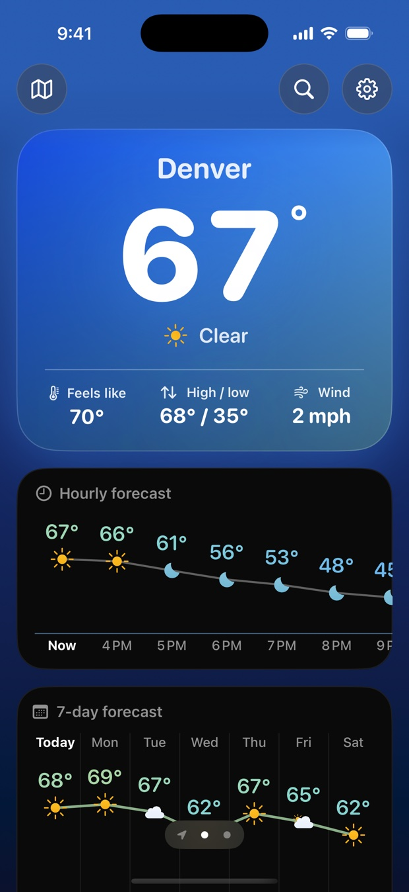
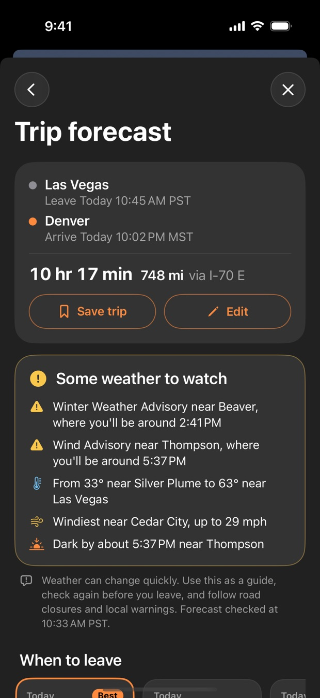
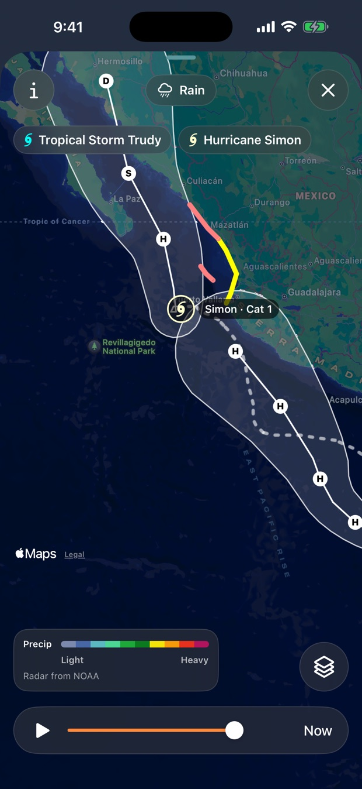
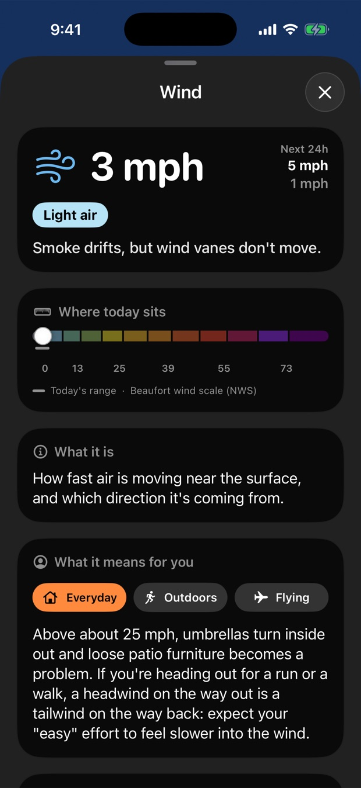

Weather for iPhone
The weather app that explains every reading.
A clean forecast, live radar, and hurricane tracking, with a plain-language guide to every reading.
No ads, and no tracking in the app. Free to download, with a free forecast.

Next update · Included with Premium
Know the weather on every mile of your drive.
Read for the time you reach each town, not just where you start.
- Every stop, forecast for when you're there
- The best time to leave, across up to 3 routes
- Follow it from the road
Covers drives in the next 7 days. Weather can change quickly, so check again before you leave.
See details
- Each stop shows the forecast for when you'll get there, in that place's local time.
- Compares leaving now with the next 8 hours, and marks the departure that misses the worst of it.
- Up to 3 routes from Apple Maps, side by side, with the calmest one marked.
- Official weather alerts near your route, with when you'll be there.
- Save a trip, and once you're driving it updates from where you are for the rest of the way.
- A guide, not a guarantee: follow road closures and local warnings.

Everything you check the weather for.
Built on Apple Weather and official data from NOAA, NASA, and the National Weather Service.
Hourly and 7-day
Clear charts for the next 24 hours and the week ahead.
Next-hour rain
Minute by minute, so you know when it starts and stops.
Severe alerts
Official warnings with what to do. Always free.
Air quality and UV
What each level means for your health.
Make Today yours
Nearly 50 cards. Press and hold to move, add, or remove.
Every place you care about
Here, Home, and saved cities, each on its own clock, plus widgets for any of them.
Included with Premium
See storms coming.
Live maps from the agencies that run the radars, satellites, and hurricane center.
- Live radar for the US, Canada, and Europe
- Satellite clouds worldwide, plus fronts
- Every hurricane with its cone, track, and warnings
A Hurricanes card shows up free when a storm is within about 1,200 miles of your city.
See details
- Rain radar for the last 90 minutes across the US (NOAA), Canada (Environment Canada), and Europe (EUMETNET's network of about 150 radars in 30 countries). It starts playing the moment you open it.
- Satellite clouds anywhere in the world over the last 3 hours, from NASA and NOAA.
- Fronts: NOAA's national forecast chart, with cold and warm fronts, highs and lows, and where rain and snow are expected over the next three days.
- Every hurricane and tropical storm in the Atlantic, Gulf of Mexico, Caribbean, and Eastern and Central Pacific, with the 5-day cone, track, and expected positions.
- Coastal watches and warnings in their official colors, plus top winds, gusts, pressure, heading, and distance from you.
- Where each storm sits on the Saffir-Simpson scale, what the cone means and doesn't, and the official advisory a tap away. Updates as each new advisory comes out.
- Color legends for every map, in your units.

In every reading
Learn what every number means.
Tap any reading for a plain-language guide. No meteorology degree needed.
- Where today sits on the real scale
- What it feels like, in plain words
- What it means for your day
Free guides to read now
What is dew point? UV index explained What a 40% chance of rain means Kp index and the aurora See all 10 guides
Included with Premium
Go deeper than the forecast.
The specialist data other apps leave out, each with its own guide. Much of it comes from US agencies, so it covers the US.
Aurora
The Kp index and how far south the lights may reach.
Tides
Next high and low, and where the water is now.
Ocean
Waves, swell, and water temperature from NOAA buoys.
Rivers
River levels and how close they are to flooding.
Earthquakes
Recent quakes nearby, from the USGS.
Aviation
Flight category, METAR, and TAF, decoded.
Outlooks
Severe storm risk, and the weeks ahead from NOAA.
Forecaster's notes
Your local NWS office explains what they expect.
Start free. Go Premium when you want more.
One plan with everything. No tiers, no add-ons, no ads.
Free
- Forecasts and next-hour rain
- Severe weather alerts
- Every reading explained
- Your location plus 2 cities
- Small Home Screen widget
Premium
Everything in Free, plus:
- Live radar, satellite, and fronts
- Hurricane tracking
- Trip forecast, coming in the next update
- Full guides with everyday, outdoors, and flying advice
- Aurora, tides, ocean, aviation, and more
- Every widget and unlimited cities
How we compare
US App Store prices, checked October 2026. Each app offers different features, so compare what matters to you.
| App | Monthly | Yearly | Lifetime |
|---|---|---|---|
| Solrise Weather | $2.49 | $14.99 | $34.99 |
| Mercury Weather | $2.99 | $14.99 | $59.99 |
| Hello Weather | $1.99 | $19.99 | $99.99 |
Not built yet: an Apple Watch app and rain notifications. When they arrive, they're included in Premium at no extra cost.
Subscriptions renew automatically until cancelled in your Apple ID settings. Cancel at least 24 hours before a renewal or the end of the trial to avoid being charged. Have a promo code? Redeem it in the app under Settings. See our Terms of Use and Privacy Policy.
Questions
When is Trip forecast coming, and how far ahead does it work?
Trip forecast is coming in the next update and is included with Premium. It works for drives in the next 7 days, as far ahead as hourly forecasts reach. Weather can change quickly, especially days out, so treat it as a guide, check again before you leave, and follow road closures and local warnings.
Is Solrise free?
Yes. The forecast, alerts, the small widget, and every core reading are free, with no ads. Premium adds live radar and maps, hurricane tracking, full guides, aurora, tides, ocean conditions, aviation, and unlimited cities.
Where does the weather data come from?
Forecasts, current conditions, and alerts come from Apple Weather. US radar, air quality, hurricanes, tides, ocean conditions, aviation reports, aurora, and outlooks come from NOAA and the National Weather Service, Canadian radar from Environment and Climate Change Canada, European radar from EUMETNET OPERA, satellite imagery from NASA and NOAA, and earthquakes from the US Geological Survey. Every page in the app names its source.
Does Solrise work outside the US?
Yes. The forecast, current conditions, UV, and every core reading come from Apple Weather and work worldwide, and so do satellite clouds, aurora, and earthquakes. Rain radar covers the US, Canada, and most of Europe. Many of the specialist readings come from US government agencies, so they cover the US. Cards without data for your area stay out of your way, and the radar says when a map doesn't cover it.
Which hurricanes does Solrise track?
Every storm the National Hurricane Center tracks: hurricanes, tropical storms, and tropical depressions in the Atlantic, Gulf of Mexico, Caribbean, and Eastern and Central Pacific. They appear on the radar map automatically while they're active.
Is there a lifetime option?
Yes. $34.99 once unlocks Premium for good, with no subscription. Prefer flexibility? Premium is also $2.49 a month.
What do you do with my location?
Only fetch weather for it. It stays on your iPhone and is never sold. See our privacy policy.